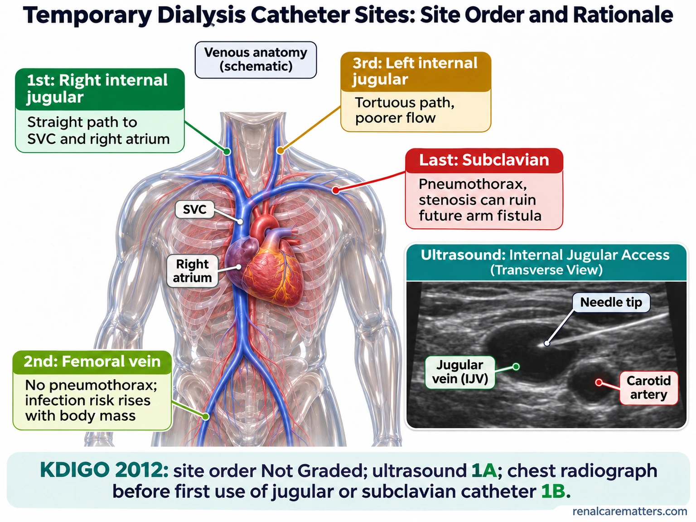
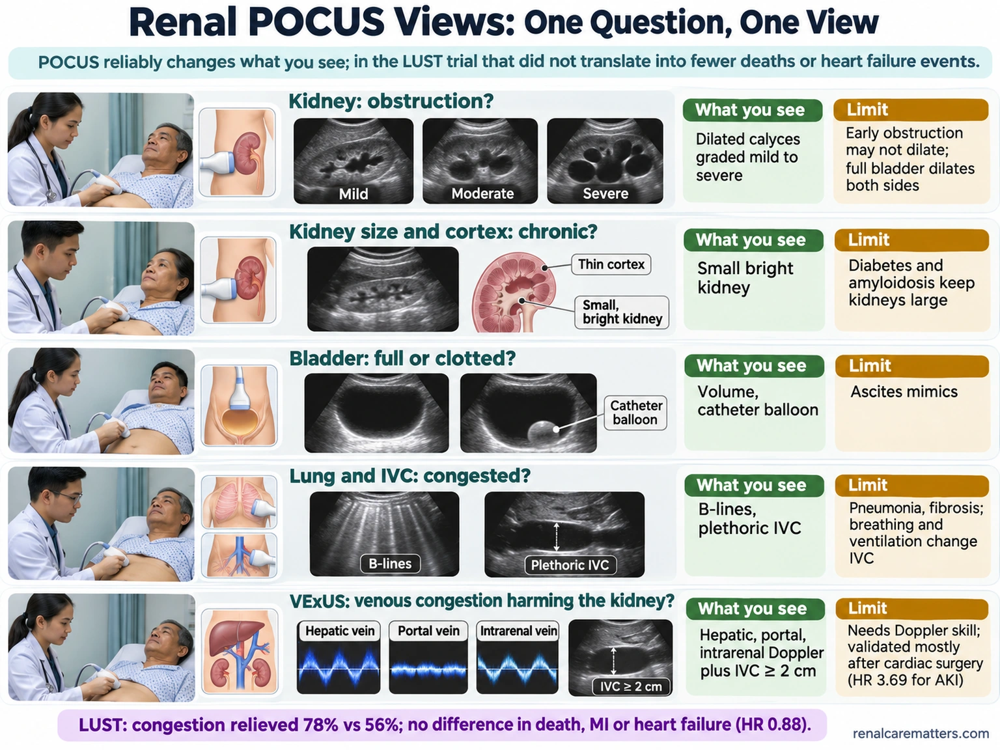

Procedural safety and renal point-of-care ultrasound
Consent and act within your privileges for catheters and biopsies, and use kidney, bladder, lung and venous ultrasound.
PublishedNailathalaGipatikPepalwal:ReferencesMga SanggunianMga TinubdanReng Reperensya:7Audience: Adult and pediatric nephrology fellows · internal medicine and pediatric residents · medical interns on medicine, pediatrics, ICU and dialysis rotations, and residents who work shifts as dialysis physicians on dutyRead timeOras ng pagbasaOras sa pagbasaOras ning pamamasa:
Training track for nephrology fellows, residents and medical interns
Study material for medical interns, residents and fellows. It explains the reasoning behind common decisions; it is not a protocol and gives no drug doses. Doses, rates and order sets come from current guidelines, product labels, your institution’s approved protocols and your supervising physician. Benefit rules change: confirm them on the date of service. Every case is fictional.
Learning objectives
After this module you should be able to
Intern: Prepare a patient for a renal procedure with the pre-procedure checklist, take part in the time-out, and monitor and report vital signs, urine and pain after the procedure.
Resident: Obtain informed consent within your privileges, assist at temporary dialysis catheter insertion and kidney biopsy, and recognize and escalate complications at once.
Fellow: Where privileged, place temporary dialysis catheters with ultrasound guidance at the site the Kidney Disease: Improving Global Outcomes (KDIGO) guideline prefers, perform native kidney biopsies, and use point-of-care ultrasound (POCUS) of the kidney, bladder, inferior vena cava and lungs with an honest view of its evidence.
Pre-testBefore you read, answer the 5 self-assessment questions and note your score. After the module, select New set of questions and compare. The difference is what you learned; the questions you still miss are what to reread.
Start here
The big picture, in plain words
Your role · hands, eyes and limitsProcedures are where training status matters most, because the harm is immediate. An intern owns preparation, the checklist, the time-out and post-procedure observation. A resident obtains consent and assists, within what the hospital has authorized. A fellow performs catheter insertion and biopsy only where the hospital’s credentialing grants the privilege and a supervisor is available, and uses POCUS to answer focused bedside questions. Everyone owns the right to stop.
In plain wordsThink of ultrasound as the reverse camera on a car. Parking by feel works most of the time; with the camera you see the post before you hit it.
The picture has a limit. A reverse camera shows the whole rear at once. An ultrasound shows a thin slice, and a needle is visible only when it lies in that slice. Operators who see the vein and then look away while the needle advances get most of the risk back. Ultrasound also does not see coagulation, platelet function or blood pressure, the things that decide whether a biopsy bleeds. And a POCUS image answers the question you asked, such as “is the bladder full?” or “are there B-lines?”, not every question a radiologist would ask of the same organ.
The underlying physiology explains where the risks sit. The internal jugular vein lies beside the carotid artery and above the lung apex. The femoral vein lies beside the femoral artery in a site that is harder to keep clean. The kidney receives about a fifth of the cardiac output through a cortex full of arcuate and interlobular arteries; in kidney failure, platelets work poorly. Each procedure in this module is a needle pushed past one of these structures.
Figure 1 · Key numbers
Ultrasound for jugular access (Cochrane 2015, 35 trials)Total complications cut by 71% (RR 0.29) and arterial puncture by 72% (RR 0.28) versus landmarks
Ultrasound for dialysis catheters (KDIGO 2012, 5.4.3)Recommended (1A)
Native biopsy complications (Poggio 2020, 118,064 biopsies)Transfusion 1.6%, intervention to stop bleeding 0.3%, death 0.06%
Femoral versus jugular dialysis catheters (Cathedia, 750 patients)Colonization similar overall (40.8 vs 35.7 per 1,000 catheter-days); jugular hematoma 3.6% vs femoral 1.1%
Lung ultrasound-guided strategy (LUST, 367 patients on hemodialysis)Congestion relieved more often (78% vs 56%) but no difference in death, myocardial infarction or heart failure (heart rate (HR) 0.88)
Most renal procedures go well when the patient is prepared, the operator is privileged and the image guides the needle. A few go wrong, usually by bleeding, and the first hour decides the outcome. Your work is to prepare carefully, consent honestly, use ultrasound properly, watch closely afterward, and call early.
Opening case · fictional
Case: Four o’clock, after the biopsy
Wednesday, a tertiary hospital in Quezon City. Ms. Kristine Lopez, 29, has suspected lupus nephritis: proteinuria of 3.4 g/day, red cell casts and a creatinine of 1.8 mg/dL that was 0.9 three months ago. Her platelets are 140 × 10&sup9;/L and her coagulation tests are normal. Her blood pressure the night before was 150/95 mm Hg. At 10 a.m. the nephrology fellow, Dr. Paolo Reyes, took two cores from the lower pole of the left kidney under real-time ultrasound, with the attending present. Her hemoglobin before the biopsy was 11.2 g/dL.
At 4 p.m. the nurse calls the resident on duty, Dr. Mae Santos. Ms. Lopez has new left flank pain, her urine is red with small clots, her blood pressure is 100/60 mm Hg and her heart rate is 118 per minute. A repeat hemoglobin, sent an hour ago per the post-biopsy protocol, is 8.9 g/dL. Her mother is asking whether “the doctor in training” did something wrong.
Before reading on, decide:
What is happening, and what does the resident do in the first 30 minutes?
What risk factors for bleeding were present, and which could have been addressed before?
How should the team speak with Ms. Lopez and her mother, and what must be documented?
Keep your answers in mind. The lesson gives you what you need, and the case review near the end shows one sound response.
Lesson · part 1
Consent, privileges and the time-out
A procedure is safe when four things line up: the right indication, the right patient preparation, the right operator with the right supervision, and a team that will stop when something is wrong. Most harm comes from a gap in one of them, not from a lack of skill.
Step
Why it exists
Who owns it
Indication confirmed
A procedure without a clear question to answer carries all the risk and none of the benefit
Attending and fellow
Privileges checked
The hospital, not a course or a title, decides who may perform which procedure and under what supervision
Fellow, with the department
Informed consent
The patient must understand the reason, the alternatives, the risks with real numbers, who will do the procedure and that a trainee will take part
Right patient, right side, right procedure, equipment and ultrasound ready, everyone agrees
Whole team; anyone may stop it
Post-procedure plan written
Who watches what, how often, and when to call
Fellow; carried out by nurse and intern
Consent the Philippine way, correctly. Decisions in Filipino families are often shared, and the family may expect to sign. If the patient has capacity, the patient consents; the family may be present and help. Say the trainee’s role plainly: “Dr. Reyes, a nephrology fellow, will do the biopsy with Dr. Cruz, the attending, beside him.” Give numbers from evidence, such as the biopsy figures in this module, rather than “maliit lang ang risk.” Use the language the patient speaks best, and check understanding by asking them to explain it back.
The right to stop. Every team member, including the intern and the nurse, may stop a procedure for a safety concern: wrong side, missing consent, a patient who is confused, a supervisor who has left the room, an image that does not show the needle. Your unit sets a limit on needle passes before the operator steps back; know it before you start.
RememberBefore any needle, confirm indication, privilege, consent and checklist, and say out loud that anyone may stop the procedure.
Lesson · part 2
Temporary dialysis catheters: site, ultrasound and the chest film
The guideline. KDIGO 2012 suggests starting kidney replacement therapy in acute kidney injury (AKI) through an uncuffed, nontunneled dialysis catheter rather than a tunneled one (2D). For the vein it gives an order of preference: right internal jugular first, femoral second, left internal jugular third, and subclavian last, with preference for the dominant side (Not Graded). It recommends ultrasound guidance for insertion (1A) and a chest radiograph promptly after placing a jugular or subclavian catheter and before its first use (1B).1
The mechanism behind the order. The right internal jugular vein runs almost straight into the superior vena cava and right atrium, so a catheter sits well and flows well. The left internal jugular path bends twice, so catheters kink, flow poorly and injure the vein wall. The subclavian vein is last because a catheter there can narrow it, and a narrowed subclavian vein ruins the arm for a future fistula; in a patient who may need long-term dialysis, that is a lifelong cost. The femoral vein is easy and away from the lung, but it is harder to keep clean and it keeps the patient in bed.
Site
Strength
Weakness
Bedside note
Right internal jugular
Straight path, good flow
Carotid artery beside it; lung apex below
First choice in KDIGO 2012
Femoral
No pneumothorax; compressible; fast in an emergency
Infection risk rises with body mass; limits mobility
Reasonable second choice, especially in thin patients
Left internal jugular
Available when the right is not
Tortuous path, poorer flow
Third choice
Subclavian
Comfortable, lower infection in non-dialysis catheters
Pneumothorax; stenosis that can rule out future arm access
Last choice for dialysis
The evidence for ultrasound. A Cochrane review of 35 randomized and quasi-randomized trials with 5,108 participants compared two-dimensional ultrasound with landmarks for internal jugular catheterization in adults and children. Ultrasound reduced total complications by 71% (14 trials, 2,406 participants, risk ratio [RR] 0.29), arterial puncture by 72% (22 trials, 4,388 participants, RR 0.28) and hematoma by 73%, and increased first-attempt success by 57%. The quality of evidence was very low to moderate, and heterogeneity was significant.2 The review also found data supporting ultrasound used during the puncture, not only to mark the vein beforehand.
Femoral or jugular? The Cathedia trial randomized 750 critically ill adults needing a first dialysis catheter to jugular or femoral placement. Catheter colonization did not differ overall (40.8 versus 35.7 per 1,000 catheter-days for femoral and jugular; hazard ratio 0.85), and catheter-related bloodstream infection was similar (2.3 versus 1.5 per 1,000 catheter-days). Body mass index changed the answer: in the heaviest third (above 28.4 kg/m²) jugular catheters were colonized less, and in the lightest third (below 24.2) femoral catheters were. Hematomas were more frequent with jugular placement (3.6% versus 1.1%).3 Colonization is a surrogate for infection. Many Filipino patients fall in the lighter group, so a femoral catheter placed well is a defensible choice when the right jugular is not suitable.
A note on 3SITES. This trial randomized 3,471 nontunneled central venous catheters in adult intensive care to subclavian, jugular or femoral sites. Bloodstream infection or symptomatic thrombosis occurred at 1.5, 3.6 and 4.6 per 1,000 catheter-days respectively, while pneumothorax needing a chest tube occurred in 1.5% of subclavian and 0.5% of jugular insertions.4 These were general central lines, not dialysis catheters, and the trial did not measure later venous stenosis. That is why KDIGO still puts the subclavian site last for dialysis.
In childrenVessels are small and close together, so real-time ultrasound matters even more, catheter size and length are chosen by weight, and most children need sedation or general anesthesia for insertion and biopsy. Vein preservation is a lifelong concern because a child may need dialysis access for decades. See Attending Pediatric Nephrologist, Module 24.
Philippine practice. Not every emergency room or provincial ward has an ultrasound machine at night. That is a system problem to raise, not a reason to abandon the 1A recommendation casually. If no machine is available and dialysis cannot wait, the most experienced privileged operator inserts, usually at the femoral site, and the team documents why.

Figure 2. Right jugular first, subclavian last. KDIGO 2012 recommends ultrasound guidance (1A) and a chest radiograph before first use of a jugular or subclavian catheter (1B).
RememberRight jugular first, femoral second, subclavian last; watch the needle tip on ultrasound the whole way; get a chest film before using a jugular or subclavian catheter.
Lesson · part 3
Native kidney biopsy: who bleeds, and what to do when they do
Why the kidney bleeds. A biopsy needle passes through the cortex, where arcuate and interlobular arteries branch densely. A small tear seals when the capsule tamponades the leak and platelets plug the vessel. Bleeding grows when pressure in the vessel is high (uncontrolled hypertension), when platelets work poorly (uremia, antiplatelet drugs), when clotting fails (anticoagulants, liver disease), when the kidney is small and scarred so a core must pass more tissue, and when the patient is acutely ill. Blood can track outside the capsule into a hematoma, into the collecting system as visible hematuria with clots, or both.
How often. A systematic review and meta-analysis for the Kidney Precision Medicine Project pooled 87 studies with 118,064 native biopsies done with automated devices under imaging. Estimated rates were pain at the site 4.3%, hematoma 11%, macroscopic hematuria 3.5%, bleeding needing transfusion 1.6%, intervention to stop bleeding 0.3% and death 0.06% (0.03% for outpatient biopsies). Complications were more frequent in hospitalized patients and those with acute kidney disease.5 These are pooled estimates from studies of mixed quality; use them for consent, and expect your own unit’s rate to differ.
Before the biopsy
Why
What you check
Blood pressure
High arterial pressure drives bleeding through a needle tract
Controlled to the unit’s threshold before the procedure
Platelets and coagulation
Plug formation and clotting
Count and clotting tests per protocol; uremic platelet dysfunction is not shown by the count
Antithrombotic drugs
Aspirin, clopidogrel, anticoagulants
Stopped or bridged per protocol, with the prescriber’s agreement
Kidney size and number
Small, echogenic kidneys give low yield and more risk; a solitary kidney raises the stakes
Ultrasound before the day
Baseline hemoglobin
The comparison that tells you later whether bleeding is significant
Recorded, with the post-biopsy schedule written
Rescue plan
A rare major bleed needs blood and interventional radiology quickly
Blood type and screen; know who can embolize and how long it takes
After the biopsy. Most bleeding shows itself within the first hours, though it can be delayed. The post-biopsy protocol sets bed rest, vital-sign checks, urine inspection and a repeat hemoglobin. The intern and nurse watch for flank pain, dizziness, a rising pulse, a falling pressure and red urine, and call at once.
When it bleeds. Resuscitate first: two large-bore lines, crossmatched blood, fluid, and frequent vital signs. Stop any antithrombotic drug. Use POCUS to look for a perinephric hematoma and a bladder distended with clot. Call the attending nephrologist and, per protocol, interventional radiology for angiography and embolization if instability persists, and urology if clot retention blocks the bladder. Agents that improve platelet function in uremia are a decision for the attending.
Figure 3 · Bleeding after a kidney biopsy
RecognizeFlank pain, dizziness, rising pulse, falling pressure, red urine or clots, a falling hemoglobin.
ResuscitateLay flat, oxygen per protocol, two large-bore lines, fluid, send crossmatch and repeat hemoglobin.
CallThe attending nephrologist now. Do not wait for the next hemoglobin.
LookPOCUS for perinephric hematoma and a clot-filled bladder.
Stop drugsHold antithrombotics; avoid anything that worsens bleeding.
EscalateTransfusion per protocol; interventional radiology for embolization if instability persists; urology for clot retention.
Talk and writeTell the patient and family what is happening and what is being done; document times, values and actions.
Philippine practice. Kidney pathology often needs immunofluorescence and electron microscopy that many provincial hospitals send to Metro Manila, and results can take days to weeks. Interventional radiology is not available everywhere. A biopsy should be done where a major bleed can be managed, which may mean transferring the patient before the procedure rather than after a complication.
Stop and callStop and call the attending nephrologist, per unit protocol, but always ask the attending nephrologist for guidance, when:
Hypotension, a rising pulse, or a hemoglobin fall after biopsy
Gross hematuria with clots, or inability to void after biopsy
Pulsatile blood, bright red backflow or a dilator in an artery during catheter insertion: leave it in place and call; do not pull it out
New breathlessness or falling oxygen saturation after a jugular or subclavian attempt
Any procedure where the supervisor is not available or the image does not show the needle
RememberEvery biopsy patient is a possible bleeder for the first hours. Watch pulse and pressure, not only the hemoglobin, and call at the first sign.
Point-of-care ultrasound (POCUS) is ultrasound done and interpreted by the treating clinician at the bedside to answer a focused question. In nephrology, five views do most of the work.
Question
View
What you see
Limits
Is there obstruction?
Kidney, long and short axis
Dilated pelvis and calyces (hydronephrosis), graded mild to severe
Early obstruction may not dilate yet; a full bladder can dilate both sides
Is the disease chronic?
Kidney size and cortex
Small kidneys with bright cortex and thin parenchyma suggest chronic disease
Diabetes and amyloidosis can keep kidneys large
Is the bladder full or clotted?
Bladder, transverse and sagittal
Volume estimate, catheter balloon position, clot
Ascites can mimic a full bladder
Is the patient congested?
Lung (B-lines, effusion) and inferior vena cava (IVC)
Many B-lines suggest interstitial fluid; a plethoric IVC suggests high right atrial pressure
B-lines also occur in pneumonia and fibrosis; IVC size changes with breathing pattern and ventilation
Is venous congestion harming the kidney?
Venous excess ultrasound (VExUS): IVC plus hepatic, portal and intrarenal venous Doppler
A graded pattern of flow abnormality
Needs Doppler skill; validated mostly after cardiac surgery
VExUS, and what it shows. The VExUS grading system was developed in a single-center post hoc analysis of 145 patients after cardiac surgery, with 706 ultrasound assessments. Severe congestion, defined as severe flow abnormalities in several Doppler patterns with an IVC of at least 2 cm, had the strongest association with subsequent AKI (hazard ratio 3.69; 2.82 after adjustment) and a positive likelihood ratio of 6.37 when seen at intensive care admission.6 It is a promising tool for seeing congestion; it has not been shown in a randomized trial to improve outcomes when used to guide treatment.
LUST, and what it teaches about surrogates. The Lung Water by Ultra-Sound Guided Treatment (LUST) trial randomized 367 patients on hemodialysis with high cardiovascular risk to a strategy that used pre-dialysis lung ultrasound to adjust ultrafiltration and drugs, or to usual care. Over a mean of 1.49 years, lung congestion was relieved more often with ultrasound guidance (78% versus 56%), and the strategy was safe. The primary outcome of death, nonfatal myocardial infarction or decompensated heart failure did not differ (hazard ratio 0.88, 95% confidence interval 0.63 to 1.24). A post hoc analysis suggested fewer recurrent heart failure episodes.7 The lesson is general: POCUS reliably changes what you see, a surrogate, and that does not guarantee a change in what patients experience.
Using it well. Ask one question before you place the probe. Record the images you base a decision on. Combine the finding with the examination, the trend and the history; a single B-line count does not prescribe a fluid goal. Learn under supervision, keep a logbook, and have your early studies reviewed. The site’s VExUS and right atrial pressure calculators help you grade consistently.
Philippine practice. Handheld ultrasound devices have made POCUS possible in provincial hospitals and dialysis units that have no radiologist at night. Doppler-capable machines for VExUS are less common. A bladder scan and a look for hydronephrosis are within reach of most trained residents and answer two of the most common AKI questions in minutes.

Figure 4. One question, one view. POCUS reliably changes what you see; in the LUST trial that did not translate into fewer deaths or heart failure events.
RememberAsk one focused question, answer it with the right view, and treat the image as a surrogate to combine with the patient, not as an order.
On the floor
Real situations: problems and solutions
These are fictional but typical. For each one, cover the answer, decide what you would do, then compare. Where a step depends on local rules, your unit’s procedure and your supervisor’s direction come first.
The bright red backflow
What you see
At 2 a.m. in a Cebu emergency room, a resident inserting a right jugular dialysis catheter sees pulsatile bright red blood after passing the dilator.
What is likely going on
Probable carotid artery cannulation.
What to do
Leave the dilator in place, do not pull it out, apply no further dilation, keep the patient still, and call the attending and vascular surgery per protocol.
Why it matters
Removing a large dilator from an artery can cause uncontrollable bleeding or stroke; repair is planned with a surgeon.
The breathless patient after the line
What you see
An hour after a subclavian attempt in Iloilo, a patient on the ward becomes breathless and his oxygen saturation falls.
What is likely going on
Possible pneumothorax.
What to do
Give oxygen, examine, use lung ultrasound for lung sliding if trained, get an urgent chest radiograph, and call the senior at once.
Why it matters
Pneumothorax is the main early risk of subclavian and jugular access, which is why KDIGO 2012 asks for a chest film before first use (1B).
The small bright kidneys
What you see
A 58-year-old in Tarlac with a creatinine of 6.2 mg/dL is booked for biopsy. POCUS shows kidneys of 8 cm with bright, thin cortex.
Show the images to the attending before the procedure and discuss whether biopsy will change management.
Why it matters
A biopsy without a decision to change carries all the risk and little benefit.
The oliguric patient with a full bladder
What you see
A man in a Pampanga medicine ward has produced 80 mL of urine in 8 hours. The intern is asked to start a diuretic.
What is likely going on
Urinary retention until proven otherwise.
What to do
Do a bladder scan or POCUS first; if the bladder is distended, catheterize per protocol and report.
Why it matters
Obstruction at the bladder outlet is the quickest reversible cause of falling urine output.
Field notes
Write the post-biopsy observation plan before the first core is taken.
Keep the needle tip in the ultrasound plane; if you lose it, stop and find it.
Record which vein, which side, how many passes and the chest film result in the procedure note.
Know who can embolize and how long it takes, before the biopsy day.
Save the POCUS images you base a decision on.
Case review
Back to the case: Four o’clock, after the biopsy
What is happening, first 30 minutes. She is bleeding from the biopsy site, into the collecting system (clots) and probably around the kidney (flank pain), with hemodynamic signs of significant blood loss: a heart rate of 118, a pressure of 100/60 and a hemoglobin fall of 2.3 g/dL. Dr. Santos lays her flat, gives oxygen per protocol, secures two large-bore lines, starts fluid, sends crossmatch and repeat blood counts, and calls the attending nephrologist at once rather than waiting for another hemoglobin. A bedside ultrasound can show a perinephric hematoma and whether the bladder is filling with clot. Antithrombotic drugs are held. If she does not stabilize, the attending arranges transfusion and interventional radiology for embolization, and urology if clots block the bladder.
Risk factors. She was a hospitalized patient with acute kidney disease, which Poggio and colleagues found carries higher complication rates than outpatient biopsy. Her blood pressure was 150/95 mm Hg the night before; uncontrolled pressure drives bleeding and should have been brought to the unit’s threshold before the procedure. Uremia may impair platelet function despite a normal count. Two cores is a usual number; the operator’s experience, real-time guidance and a lower-pole approach were appropriate. A written rescue plan (blood type and screen, knowing who can embolize) belongs in the preparation.
Talking and documenting. The attending and fellow speak with Ms. Lopez and her mother together and honestly: bleeding is a known risk that was discussed in consent (transfusion in about 1.6% of biopsies), this is what is being done, and this is who is responsible. Avoid defensiveness and blame; a fellow performing under supervision is normal training, and the attending is accountable. Document the time of each finding, each value, each action, who was called and when, and the conversation with the family. Report through the hospital’s incident system per policy, so the team can learn from it.
Interactive case · fictional
Interactive case: A catheter at midnight
Work through a shift one decision at a time. The panel at the top changes with what you choose. After each choice you see why it is, or is not, the best move; after a weaker one you can try again or carry on and see where it leads. Your first choice at each step is scored. The score stays on this device and nothing is sent anywhere. In real practice, your unit’s protocol and the people responsible for each decision come first.
Skills lab · with your preceptor
Skills checklist: Procedural safety and renal POCUS
Complete with a preceptor, in simulation or at your own unit. Sign-off is local and never grants a privilege. Your preceptor rates each step as satisfactory, needs practice, or not observed. Steps marked Critical must all be satisfactory before sign-off. This checklist supports supervised learning; your unit’s own procedure and competency form are the authority. A printable version of every checklist is on the trainer page.
Completes a pre-biopsy checklist including blood pressure, platelets, coagulation, antithrombotics, kidney size and rescue plan
Obtains informed consent that states the trainee’s role and quotes complication rates from evidence
States the KDIGO 2012 site order and grades for temporary dialysis catheters, and the reason for each
Performs supervised POCUS of kidney, bladder, IVC and lungs and reports a focused answer
Leads the first response to simulated post-biopsy bleeding, including escalation and documentation
Placement activity. Procedure room, ward, intensive care unit (ICU) or simulation; privileges remain with the hospital
Self-assessment
Check your understanding
Each visit draws 5 questions at random from this module’s 5-question bank. Choose the single best answer for each, then select Check answers; an explanation appears under the best answer. Select New set of questions for a different mix. A good target is 4 of 5 on two different sets. Nothing you select is sent anywhere; scoring happens in your browser.
Kidney Disease: Improving Global Outcomes (KDIGO) Acute Kidney Injury Work Group. (2012). KDIGO clinical practice guideline for acute kidney injury. Kidney International Supplements, 2(1), 1–138. https://doi.org/10.1038/kisup.2012.1
Brass, P., Hellmich, M., Kolodziej, L., Schick, G., & Smith, A. F. (2015). Ultrasound guidance versus anatomical landmarks for internal jugular vein catheterization. Cochrane Database of Systematic Reviews, 2015(1), Article CD006962. https://doi.org/10.1002/14651858.CD006962.pub2
Parienti, J.-J., Thirion, M., Mégarbane, B., Souweine, B., Ouchikhe, A., Polito, A., Forel, J.-M., Marqué, S., Misset, B., Airapetian, N., Daurel, C., Mira, J.-P., Ramakers, M., du Cheyron, D., Le Coutour, X., Daubin, C., Charbonneau, P., & Members of the Cathedia Study Group. (2008). Femoral vs jugular venous catheterization and risk of nosocomial events in adults requiring acute renal replacement therapy: A randomized controlled trial. JAMA, 299(20), 2413–2422. https://doi.org/10.1001/jama.299.20.2413
Parienti, J.-J., Mongardon, N., Mégarbane, B., Mira, J.-P., Kalfon, P., Gros, A., Marqué, S., Thuong, M., Pottier, V., Ramakers, M., Savary, B., Seguin, A., Valette, X., Terzi, N., Sauneuf, B., Cattoir, V., Mermel, L. A., du Cheyron, D., & 3SITES Study Group. (2015). Intravascular complications of central venous catheterization by insertion site. New England Journal of Medicine, 373(13), 1220–1229. https://doi.org/10.1056/NEJMoa1500964
Poggio, E. D., McClelland, R. L., Blank, K. N., Hansen, S., Bansal, S., Bomback, A. S., Canetta, P. A., Khairallah, P., Kiryluk, K., Lecker, S. H., McMahon, G. M., Palevsky, P. M., Parikh, S., Rosas, S. E., Tuttle, K., Vazquez, M. A., Vijayan, A., Rovin, B. H., & Kidney Precision Medicine Project. (2020). Systematic review and meta-analysis of native kidney biopsy complications. Clinical Journal of the American Society of Nephrology, 15(11), 1595–1602. https://doi.org/10.2215/CJN.04710420
Beaubien-Souligny, W., Rola, P., Haycock, K., Bouchard, J., Lamarche, Y., Spiegel, R., & Denault, A. Y. (2020). Quantifying systemic congestion with point-of-care ultrasound: Development of the venous excess ultrasound grading system. The Ultrasound Journal, 12(1), 16. https://doi.org/10.1186/s13089-020-00163-w
Zoccali, C., Torino, C., Mallamaci, F., Sarafidis, P., Papagianni, A., Ekart, R., Hojs, R., Klinger, M., Letachowicz, K., Fliser, D., Seiler-Mußler, S., Lizzi, F., Wiecek, A., Miskiewicz, A., Siamopoulos, K., Balafa, O., Slotki, I., Shavit, L., Stavroulopoulos, A., ... London, G. M. (2021). A randomized multicenter trial on a lung ultrasound-guided treatment strategy in patients on chronic hemodialysis with high cardiovascular risk. Kidney International, 100(6), 1325–1333. https://doi.org/10.1016/j.kint.2021.07.024
Educational self-study for physicians in training. Clinical tasks need your institution’s authorization and supervision. Completing this track is an Academy learning record only. It does not confer licensure, specialist status, PSN or PNSP membership or board eligibility, procedural privileges, CPD units, or completion of an institutional training program, and it does not replace current guidelines, regulations, your institution’s protocols and formulary, or your supervisor.